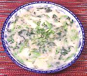

|
Taro & Watercress SoupChina - Hunan - Yu tou wa wa cai | ||||
| Serves: Effort: Sched: DoAhead: |
3 soup ** 1-1/2 hrs Part |
A creamy textured soup, simple but intersting as a side or intro course. It's less suitable as a main course soup and a little thick for a finish soup (soup is often served at the end of a meal in China). | |||
|
1-1/2 4 4 4 2 3/4 tt |
# c oz T t t |
Taro Roots (1) Stock (2) Scallions Watercress (3) Oil Salt Pepper (4) |
Make: - (1-1/2 hrs - 30 min work)
|